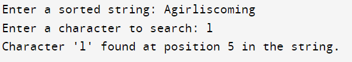

#include<stdio.h>
#include<string.h>
int binarySearchRecursive(char arr[], char target, int left, int right) {
if (left > right) {
return -1;
}
int middle = (left + right) / 2;
if (arr[middle] == target) {
return middle;
} else if (arr[middle] < target) {
return binarySearchRecursive(arr, target, middle + 1, right);
} else {
return binarySearchRecursive(arr, target, left, middle - 1);
}
}
int main() {
char inputString[100];
char searchChar;
printf("Enter a sorted string: ");
scanf("%s", inputString);
printf("Enter a character to search: ");
scanf(" %c", &searchChar);
int length = strlen(inputString);
int result = binarySearchRecursive(inputString, searchChar, 0, length - 1);
if (result != -1) {
printf("Character '%c' found at position %d in the string.\n", searchChar, result+1);
} else {
printf("Character '%c' not found in the string.\n", searchChar);
}
return 0;
}
Output:
